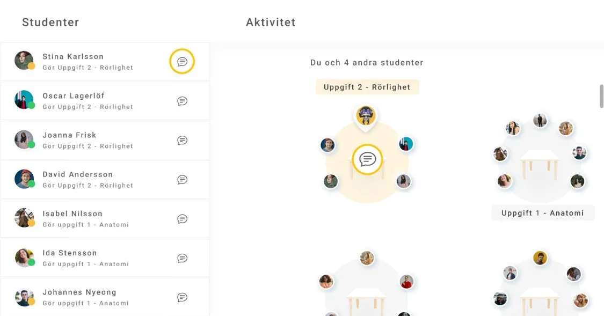
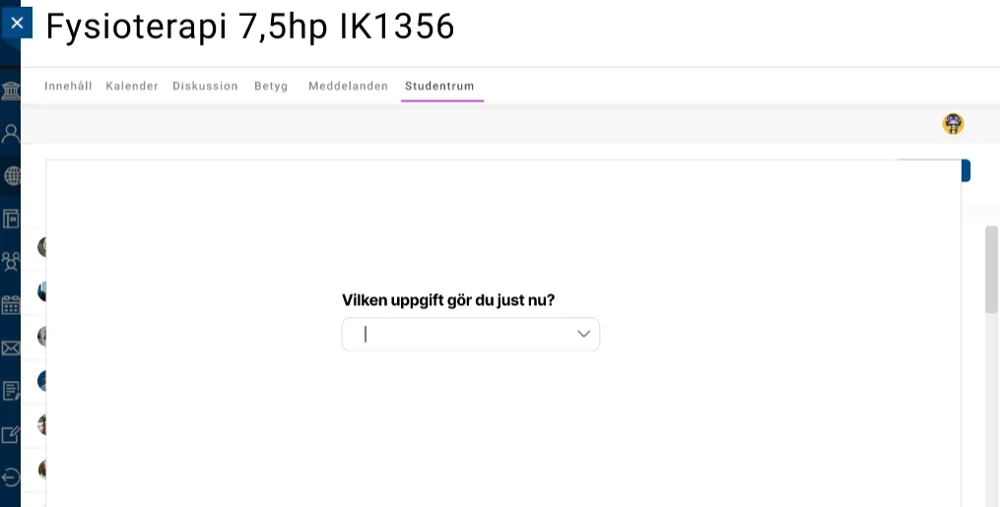
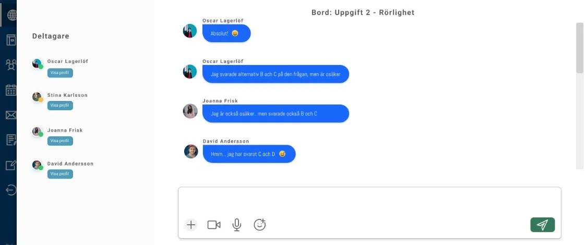
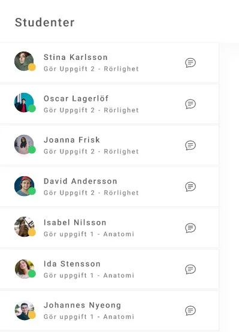
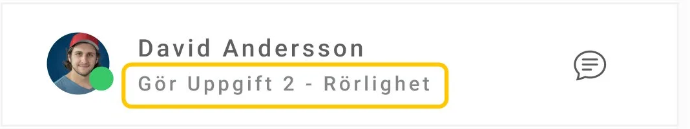
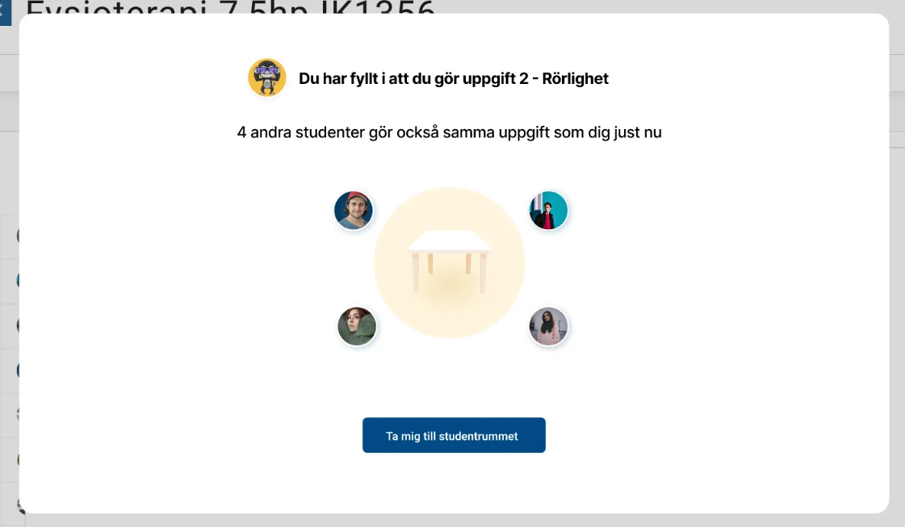
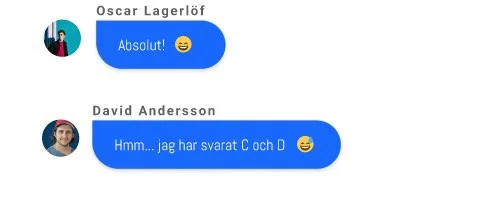
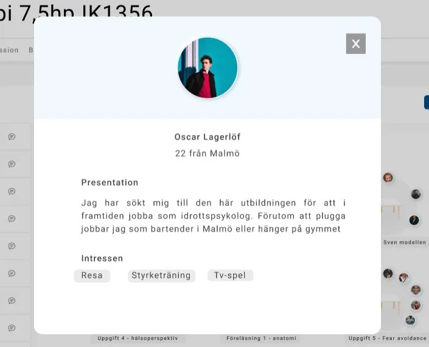

Halmstad University · 2022 · UX Research & Design (with Julia Forssén)
A Shared Online Space
Designing an LMS feature that helps online students feel like they're studying alongside real people, not just logged-in usernames.

The challenge
Online education keeps fewer students to the finish line than campus programmes, and the literature points to a specific cause: a lack of informal communication. Campus students bump into each other in hallways and cafeteria queues; online students mostly don't. Existing LMS tools like discussion forums are built for coursework, not for the small, spontaneous exchanges that make people feel like they belong to a class. Bachelor's thesis, co-written with Julia Forssén, in Digital Design and Innovation at Halmstad University.


Process
A literature review broke informal communication into three components: spontaneity, interactivity, and presence, which produced six design goals. We built a Figma prototype on top of a modified Blackboard course page: a new "Student Room" chat tab layered onto the real LMS interface. Ten participants, recruited for prior LMS and online-course experience, worked through two evaluation scenarios while we observed, then followed up with semi-structured interviews and thematic analysis.
Key decisions
- Simulate the chat, don't build it. We couldn't ship a working chat backend in scope, so the conversation was scripted. That kept the evaluation focused on what the feature communicates, not on chat infrastructure.
- Auto-assign tables, don't let users pick. Grouping participants automatically by the task they'd filled in removed a decision point that would have suppressed spontaneous contact, while still giving people something in common to talk about.
- Presence over polish. Status icons and a live-feeling activity board did more for participants' sense of "other real people are here" than any single communication feature did on its own.





Outcome
The evaluation converged into five design proposals for supporting informal communication on any LMS:
- Design for introduction and observation. Let students watch a group's tone before joining in, so they can gauge what's normal before they speak.
- Design for identifying something in common. Surface shared activity or interests so a conversation has a natural opening line.
- Design for a visual sense of shared space. Represent presence visually, not just as a list of names.
- Design for control over participation. Let students choose how involved they want to be, rather than forcing engagement.
- Design for personal and social impressions. Profiles and small expressive touches like emoticons make other users read as real people.
Reflection
The honest finding was a limit, not a clean win: the proposals supported informal communication, but couldn't guarantee it happened, since outside factors (culture, personality, prior relationships) shape whether people actually talk to each other. That's a useful result in itself, and it pointed toward a concrete next step: exploring a digital equivalent of "nollning," the orientation events Swedish universities run to introduce campus students to each other, as a way to kickstart the social trust that features alone can't manufacture.